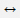

21 Bits and Bytes, Mathematics and Money
“There are only 10 types of people in the world.
Those who understand binary code and those who don’t.”
This chapter takes a closer look at the representation of the numbers and explains how binary operators operate on these values. Once we’ve examined integers in more detail, a detailed presentation of floats will follow, in turn followed by basic mathematical functions such as max(...), sin(...), and abs(...), which are implemented in Java by the Math class.
21.1 Bits and Bytes
A bit is an information carrier for the statement “true or false” and thus has two states. By combining individual bits, larger sequences are created such as the byte , which consists of 8 bits, for example, 00010011 bin. Since the number mentioned could well be a decimal number due to the digits 0 and 1, we place a small bin after the number to avoid misunderstanding.
If 8 bits = 1 byte is used as a basis, 256 different numbers can be formed by different assignments. If no bit of the byte is set, the number is 0; if every bit is set, the number is 255. Each bit at a position in the byte can be 0 or 1, and this results in a value at which position 0 or 1 appears in the sequence. In this case, we’re focused on what’s called positional notation (or place-value notation, or positional numeral system), where the position of a digit is crucial because 12 is not equal to 21 and 10 bin is not equal to 01 bin . Now, the only question is how bit numbering is done because the bit with the lowest place value could be on the left or on the right—usually, it’s on the right, and the bit with the highest place value is on the left.
In the binary system, we have the digits 0 and 1. The value of a binary number is obtained by adding the digits 0 or 1, each of which is previously multiplied by its place value 2 i. The value assignment for the number 19 is calculated from 16 + 2 + 1 since it’s composed of terms of the sum of the form 2 i: 19 dec = 16 + 2 + 1 = 1 × 2 4 + 0 × 2 3 + 0 × 2 2 + 1 × 2 1 + 1 × 2 0 = 10011 bin .
|
7 |
6 |
5 |
4 |
3 |
2 |
1 |
0 |
|
|---|---|---|---|---|---|---|---|---|
|
Value |
2 7 =128 |
2 6 =64 |
2 5 =32 |
2 4 =16 |
2 3 =8 |
2 2 =4 |
2 1 =2 |
2 0 =1 |
|
Assignment for 19 |
0 |
0 |
0 |
1 |
0 |
0 |
1 |
1 |
Table 21.1 Value Assignment
To modify bits, Java provides two kinds of tools:
-
Bitwise operators
-
Bitwise shift operations
We’ll now look at these tools next.
21.1.1 The Bit Operators: Complement, AND, OR, and XOR
Bit operators can be used to perform binary operations on operands, for example, to set a bit of a byte. Bit operations include the complement of an operand and links to other values. These bitwise operators allow individual bits to be queried and manipulated.
|
Operator |
Name |
Task |
|---|---|---|
|
~ |
Inverts each bit: 0 becomes 1, and 1 becomes 0. |
|
|
| |
For a | b, each bit of a and b is individually linked via OR. |
|
|
& |
For
a & b, each bit of
a and
b is individually |
|
|
^ |
For
a ^ b, each bit of
a and
b is individually |
Table 21.2 Bit Operators in Java
The complement is a unary operator; the others are binary operators. Let’s generally consider the binary link a # b. With the binary bitwise AND operation with &, the following applies to each bit: If any bit is set in the operand a and at the same position also in the operand b, then the bit is also set at the position in the result. With the OR operation with |, only one of the operands must be set, so that the bit in the result is set. With an exclusive OR (XOR), the result is 1 if only exactly one of the operands is 1. If both are 0 or 1, the result is 0, which corresponds to a binary addition or subtraction. [ 228 ]
Let’s summarize the result once again in a table:
|
Bit 1 |
Bit 2 |
~Bit 1 |
Bit 1 & Bit 2 |
Bit 1 | Bit 2 |
Bit 1 ^ Bit 2 |
|---|---|---|---|---|---|
|
0 |
0 |
1 |
0 |
0 |
0 |
|
0 |
1 |
1 |
0 |
1 |
1 |
|
1 |
0 |
0 |
0 |
1 |
1 |
|
1 |
1 |
0 |
1 |
1 |
0 |
Table 21.3 The Bit Operators in a Truth Table
Let’s consider two integers, for example:
|
Binary |
Decimal |
|
|---|---|---|
|
Number 1 |
010011 |
16 + 2 + 1 = 19 |
|
Number 2 |
100010 |
32 + 2 = 34 |
|
Number 1 & Number 2 |
000010 |
19 & 34 = 2 |
|
Number 1 | Number 2 |
110011 |
19 | 34 = 51 |
|
Number 1 ^ Number 2 |
110001 |
19 ^ 34 = 49 |
Table 21.4 Binary Operation of Two Integers
21.1.2 Representation of Integers in Java: Two’s Complement
The computer stores data in the states 0 and 1 and must be able to represent positive as well as negative numbers. For this purpose, different encodings exist, such as one’s complement or two’s complement, the latter being common for modern programming languages. The nature of two’s complement defines the following encoding for positive and negative integers:
-
The sign of a number determines a bit that is 1 for negative numbers and 0 for positive numbers.
-
To represent a 0, no bit is set.
-
For negative numbers, you must take the absolute value of the number, invert the bit pattern, and add 1 to the result.
[eg] Example
Let’s test this scenario on the number –1: The absolute value is 1, the bit pattern (for 16 bits) is 0000 0000 0000 0001. The negation results in 1111 1111 1111 1110. If we add 1, 1111 1111 1111 1111 will follow.
Java Integer Data Types in Two’s Complement
Java always encodes the integer data types byte , short , int, and long in the two’s complement (the data type char doesn’t define negative numbers). With this encoding, there exists one more negative number than positive number because no positive or negative 0 exist in the two’s complement, only a “positive” 1 with the bit mask 0000...0000 .
|
Decimal |
Binary |
Hexadecimal 0 |
|---|---|---|
|
–32,768 |
1000 0000 0000 0000 |
80 00 |
|
–32,767 |
1000 0000 0000 0001 |
80 01 |
|
–32,766 |
1000 0000 0000 0010 |
80 02 |
|
… |
||
|
–2 |
1111 1111 1111 1110 |
FF FE |
|
–1 |
1111 1111 1111 1111 |
FF FF |
|
0 |
0000 0000 0000 0000 |
00 00 |
|
1 |
0000 0000 0000 0001 |
00 01 |
|
2 |
0000 0000 0000 0010 |
00 02 |
|
… |
||
|
32,766 |
0111 1111 1111 1110 |
7F FE |
|
32,767 |
0111 1111 1111 1111 |
7F FF |
Table 21.5 Representations of Two’s Complement in the short Data Type
So, for all negative integers, the top bit is set to 1.
[»] Note
Two’s complement and complement (bitwise NOT) have an interesting relationship. ~0 inverts all bits, which results in -1. In general, ~a is equal to -(a+1). So, for example, ~5 is equal to -(5+1) = -6. This rule is also true when negated: ~-5 is equal to -(-5+1) = 4. And ~-~-~-~-5 is 1 .
21.1.3 The Binary, Octal, and Hexadecimal Place Value Systems
The literals for integers can be specified in four different place value systems . The most natural value system is the decimal system (also called the base-ten system ), where the literals consist of the digits 0 to 9. Additionally, the binary , octal, and hexadecimal systems write the numbers in base 2, 8, and 16, respectively. Except for decimal numbers, numbers in other formats begin with a special prefix.
|
Place Value System |
Base |
Representation of 1 |
|
|---|---|---|---|
|
0b or 0B |
Binary |
2 |
0b1 or 0B1 |
|
0 |
Octal |
8 |
01 |
|
None |
Decimal |
10 |
1 |
|
0x or 0X |
Hexadecimal |
16 |
0x1 or 0X1 |
Table 21.6 The Place Value Systems and Their Notation
A hexadecimal value starts with 0x or 0X. Since 10 digits aren’t sufficient for 16 hexadecimal numbers , a number for base 16 additionally consists of the letters a to f (or A to F). The hexadecimal system is also referred to as the sexadecimal system . [ 229 ]
An octal value starts with the prefix 0. With base 8, only the digits 0 to 7 are needed for octal values. The name comes from the Latin octo , which means “eight” in English. The octal system was a common representation choice since individual bits no longer had to be considered separately, but 3 bits were combined into a group—with 3 bits you can express numbers from 0 to 7. The octal system is still popular in communications electronics but doesn’t play any role elsewhere.
For binary numbers (i.e., numbers with base 2), you’ll use the prefix 0b or 0B. Only the digits 0 and 1 are permitted.
[eg] Example
The following examples output decimal, binary, octal, and hexadecimal numbers:
System.out.println( 1243 ); // 1243
System.out.println( 0b10111011 ); // 187
System.out.println( 01230 ); // 664
System.out.println( 0xcafebabe ); // -889275714
System.out.println( 0xC0B0 L ); // 49328
In Java programs, octal numbers should be used with caution. If you fill a number left-justified with the 0 for reasons of readability, you’ll experience a surprise:
int i = 118;
int j = 012; // Octal 012 is decimal 10
21.1.4 Effect of Typecasting on Bit Patterns
Typecasting sometimes results in the upper bits of integers being simply cut off. When adjusting floats to integers, rounding is performed. This section will demonstrate what exactly happens.
Explicit Typecasting for Integers
When converting a larger integer type to a smaller one, the upper bits are truncated. An adjustment of the sign does not take place. The representation in bits shows this scenario clearly:
int ii = 123456789; // 0000011101011011_ 11001101_00010101
int ij = -123456; // 1111111111111110_ 00011101_11000000
short si = (short) ii; // 11001101_00010101
short sj = (short) ij; // 00011101_11000000
System.out.println( si ); // -13035
System.out.println( sj ); // 7616
Listing 21.1 src/main/java/com/tutego/insel/math/TypecastDemo.java, main()
si becomes a negative number because the 16th bit at int ii was set and now shows the negative sign at short. The number after ij doesn’t have a 16th bit set, and so, the short sj becomes positive.
Converting short and char
Like char, short has a length of 16 bits. But this conversion is not possible without explicit casting. because of the sign of short. Characters are by definition always unsigned. If a char with a last set bit of the highest value were converted to a short, the result would be a negative number. Likewise, if a short denotes a negative number, the top bit in the char would be set, which is undesirable. The explicit conversion always produces only positive numbers.
The loss in typecasting from char to short occurs, for example, in the character encodings for Chinese, Japanese, or Korean characters because, in these cases, the first bit is set in Unicode, which must give way to the unset sign bit when converting to a short .
Typecastings of int and char
The print*(...) method is overloaded with the types char and int , and typecasting results in the desired output, as shown in the following examples:
int c1 = 65;
char c2 = 'A';
System.out.println( c1 ); // 65
System.out.println( (int)c2 ); // 65
System.out.println( (char)c1 ); // A
System.out.println( c2 ); // A
System.out.println( (char)(c1 + 1) ); // B
System.out.println( c2 + 1 ); // 66
You can output an integer value in an int as a character, just as you can output a char variable as a numeric value. Note that an arithmetic operation on char types results in an int. For this reason, the following expression doesn’t work for char c :
c = c + 1;
The correct version would be the following example:
c = (char)(c + 1)
Different Value Ranges for Floats and Integers
Of course, the conversion between double  long can’t be without loss of information. How could that be possible? While both a long and a double have 64 bits for data storage, a double can’t store an integer as efficiently as a long and has some “overhead” for large exponents. When implicitly converting a long to a double , some information-carrying bits may be missed, as illustrated by the following example:
long l = 1111111111111111111L; // 1111111111111111111
double d = l; // 1111111111111111170 (1.11111111111111117E18)
long m = (long) d; // 1111111111111111168
Java permits the conversion of a long into a double without explicit adaptation and also into an even smaller float, which is perhaps even stranger since float has a precision of only 6 to 7 digits, while long has 18 digits. Consider the following example:
long l = 1000000000000000000L;
float f = l;
System.out.printf( "%f", f ); // 999999984306749440,000000
Loss of Material Due to Overflows*
Overflows in calculations can lead to serious errors, as in the crash of Ariane 5 on June 4, 1996, exactly 36.7 seconds after launch. The European Space Agency (ESA) had launched the unmanned rocket, which carried four satellites, from French Guiana. Fortunately, no lives were lost, but the material damage amounted to about $500 million. The project also involved development costs of around $7 billion. The reason for the crash was a rounding error in the Ada program when converting a 64-bit float (the horizontal velocity) to a signed 16-bit integer. Unfortunately, the number was larger than 2 15 – 1 and the conversion wasn’t secured because the programmers hadn’t assumed this range of numbers. An exception occurred, and, as a consequence, the guidance system broke down, and the self-destruct mechanism was triggered as the engines threatened to stall. The really stupid thing about this story is that the software wasn’t essential for the flight and only served for launch preparations. In the event of an interruption during the countdown, the program could have been quickly terminated. Some program parts had been copied, unchanged, from the Ariane 4 software via copy/paste , but the Ariane 5 flew faster.
21.1.5 Working without Signs
Except for char, all integral data types in Java are signed and encoded in the two’s complement. With a byte , 8 bits are available for the coding of a value; however, actually only 7 bits are available because 1 bit is used for encoding the sign. The value range is from –128 to +127. A workaround enables you to exhaust the full range of values and pretend that Java has unsigned data types.
Using Byte as an Unsigned Data Type
An important property of explicit typecasting for integer types is that the excess bytes are simply truncated. Let’s look at typecasting in this case with an example:
int l = 0xABCD6F;
byte b = (byte) 0xABCD 6F;
System.out.println( Integer.toBinaryString( l ) ); // 101010111100110101101111
System.out.println( Integer.toBinaryString( b ) ); // 1101111
If a number is in the range from 0 to 255, a byte can basically store it by its 8 bits. However, Java must be forced, by explicit typecasting, to ignore the sign bit. Only then will the number 255 correspond to 8 set bits because assigning it with byte b = 255; doesn’t work.
For further processing to be successful, another property must be taken into account. Let’s look at the following example:
byte b1 = (byte) 255;
byte b2 = -1;
System.out.println( b1 ); // -1
System.out.println( b2 ); // -1
The bit pattern is the same in both cases, and all bits are set. But the fact that the console output is negative involves another Java feature: Java converts the signed byte to an int during further processing (the parameter type in the method is toBinaryString(int)). In this conversion process, the sign moves on from the byte to the int . The following example illustrates this conversion process with a binary output:
byte b = (byte) 255;
int i = 255;
System.out.printf( "%d %s%n", b, Integer.toBinaryString(b) );
// -1 11111111111111111111111111111111
System.out.printf( "%d %s%n", i, Integer.toBinaryString(i) );
// 255 11111111
The assignment of the lower 8 bits of byte b and int i is identical. But whereas with int the top 3 bytes are really zero, Java also fills up the top 3 bytes with 255 by automatically adjusting the sign when converting from byte to int in the two’s complement. If the calculation is to be continued without a sign, this conversion is disruptive. Java always makes this automatic adjustment when calculating with byte/ short, not just when a method requires the data type int , in our example.
To get a data value between 0 and 255 during further processing (i.e., to see the byte of an int unsigned), we’ll cut out the lower 8 bits with the AND operation—all other bits thus remain excluded:
byte b = (byte) 255;
System.out.println( b ); // -1
System.out.println( b & 0xff ); // 255
Note that the AND operation leads to the target type int .
Library Methods for Unsigned Treatments
Always putting a & 0xff to an expression to hide the top bytes isn’t much work, but it’s not pretty either. Methods like toUnsignedInt(byte) are much nicer since their names clearly document what’s actually happening.
The following methods in Byte may be useful:
-
static int toUnsignedInt(byte x)
-
static long toUnsignedLong(byte x)
Similarly, the following methods in Integer may be useful:
-
static long toUnsignedLong(int x)
-
static String toUnsignedString(int i, int radix)
-
static String toUnsignedString(int i)
-
static int parseUnsignedInt(String s, int radix)
-
static int compareUnsigned(int x, int y)
-
static int divideUnsigned(int dividend, int divisor)
-
static int remainderUnsigned(int dividend, int divisor)
The following methods in Long may be useful:
-
String toUnsignedString(long i, int radix)
-
static String toUnsignedString(long i)
-
static long parseUnsignedLong(String s, int radix)
-
static int compareUnsigned(long x, long y)
-
static long divideUnsigned(long dividend, long divisor)
-
static long remainderUnsigned(long dividend, long divisor)
Finally, the following methods in Short may be useful:
-
static int toUnsignedInt(short x)
-
static long toUnsignedLong(short x)
In addition to simple toUnsigned*(...) methods in wrapper classes, methods can be added that also allow the conversion of numbers to a string and the parsing of a string. New methods can also be read for integer and long , which perform unsigned comparisons, division, and residual value calculation.
Conversions from byte to char
With a similar way of working, you can also solve the question of how to convert a byte whose int value is in the minus range into a char. The first approach via typecasting (char) byte is wrong, and only a rectangular box or a question mark will appear in the output, as shown in the following example:
byte b = (byte) 'ß';
System.out.println( (char) b ); // Output is ?
Again, the dilemma is the incorrect sign matching. When the byte is used, it’s first converted to an int. The character ß then becomes –33. In the next step, this –33 is then converted into a char. That results in 65,503 and is beyond what we wanted. The problem can be solved by considering only the lower 8 bits of b , performed again by hiding some bits via the AND operator. The following notation is correct:
char c = (char) (b & 0x00ff);
System.out.println( c ); // Output is ß
As a rule, such an explicit adaptation will rarely occur in the code because Java provides extra classes for the conversion of character encodings.
21.1.6 The Shift Operators
In Java, three shift operators can be used to shift the bits of a value by a certain number of positions:
-
n << s: Left shifting of the bits of n by s positions
-
n >> s: Arithmetic right shifting by s positions with signs
-
n >>> s: Logical right shifting by s positions without signs
These binary shift operators move all bits of a data word (the bit pattern) to the right or left. In the case of the shift, the number of positions by which the shift takes place is written after the binary operator (i.e., in the right operand). Although only two directions are possible, you still must consider whether or not the sign is observed when shifting to the right. This decision is referred to as arithmetic shift (sign remains) or logical shift (sign is filled with 0).
n << s
The bits of the operand n are shifted s times to the left, taking the sign into account (multiplied by 2 at each step), which results in 2 to the power of s. The bit space that becomes free on the right is always filled with 0. However, the sign changes as soon as a 1 is shifted from position MSB – 1 to MSB. (MSB stands for Most Significant Bit , that is, the bit with the highest significance in the binary representation.)
[»] Note
Although the data type of the right operand is first an int or long with full value range, only values up to 31 are meaningful for int and up to 63 bits for long as shift positions (width) because only the last 5 or 6 bits are considered. Otherwise, the shift is always performed by the value that results from dividing by 32 or 64 as the remainder, so that x << 32 and x << 0 are also equal. Consider the following examples:
System.out.println( 1 << 30 ); // 1073741824
System.out.println( 1 << 31 ); // -2147483648
System.out.println( 1 << 32 ); // 1
n >> s (Arithmetic Right Shift)
When shifting to the right, a 1 or a 0 is inserted from the left, depending on whether the sign bit is set or not. So, the left sign bit remains untouched.
[eg] Example
Observe how the bits are shifted to the right:
Consumer<Integer> printBinary = value -> {
String s = String.format( "%32s", Integer.toBinaryString( value ) );
System.out.println( s.replace( ' ', '0' ) );
};
printBinary.accept( 0b10000000_00000000__00000000_00000000 >> 0 );
printBinary.accept( 0b10000000_00000000__00000000_00000000 >> 1 );
printBinary.accept( 0b10000000_00000000__00000000_00000000 >> 2 );
printBinary.accept( 0b10000000_00000000__00000000_00000000 >>> 0 );
printBinary.accept( 0b10000000_00000000__00000000_00000000 >>> 1 );
printBinary.accept( 0b10000000_00000000__00000000_00000000 >>> 2 );
The result is the following output:
10000000000000000000000000000000
11000000000000000000000000000000
11100000000000000000000000000000
10000000000000000000000000000000
01000000000000000000000000000000
00100000000000000000000000000000
[»] Note
A bit that has been pushed out is lost forever! Consider the following examples:
System.out.println( 65535 >> 8 ); // 255
System.out.println( 255 << 8 ); // 65280
In this case, 65,535 = 0xFFFF, but after right shifting 65,535 >> 8, we get 0x00FF = 255. If we now shift to the left again (i.e., 0x00FF << 8), the result is 0xFF00 = 65,280.
For the integer data types, taking into account the always present sign, a signed integer division by 2 follows for normal right-shifts.
n >>> s (Logical Right Shift)
The >>> operator doesn’t take into account the sign of the variable, so an unsigned right-shift is performed. Thus, only zeros are inserted on the left, at the place of the most significant bit; the sign is also shifted.
[eg] Example
You can use shift operators to easily extract the individual bytes of a larger data type, such as a 4-byte int , as in the following example:
byte b1 = (byte)(v >>> 24),
b2 = (byte)(v >>> 16),
b3 = (byte)(v >>> 8),
b4 = (byte)(v );
For a positive number, this shift has no effect, and the behavior is the same as for the >> operator.
[eg] Example
For negative operands, the following output is particularly exciting:
System.out.println( 64 >>> 1 ); // 32
System.out.println( -64 >>> 1 ); // 2147483616
A <<< operator makes no sense since the left-shift only inserts zeros to the right anyway.
21.1.7 Setting, Clearing, Reversing, and Testing a Bit
You can use bit operators together with shift operators to set a bit or to determine whether a bit has been set. Let’s consider the following methods that set, query, invert, and clear a particular bit:
static int setBit( int n, int pos ) {
return n | (1 << pos);
}
static int clearBit( int n, int pos ) {
return n & ~(1 << pos);
}
static int flipBit( int n, int pos ) {
return n ^ (1 << pos);
}
static boolean testBit( int n, int pos ) {
int mask = 1 << pos;
return (n & mask) == mask;
// alternativ: return (n & 1<<pos) != 0;
}
21.1.8 Bit Methods of the Integer and Long Classes
The Integer and Long classes provide a set of static methods for bit manipulation and for querying various bit states of integers. The notation int|long indicates by int the static methods of the Integer class and by long the static methods of the Long class.
final class java.lang. Integer| Long
extends Number
implements Comparable<Integer|Long>
-
static int Integer.bitCount(long i)
-
static int Long.bitCount(long i)
Returns the number of set bits. -
static int Integer.reverse(int i)
-
static long Long.reverse(long i)
Reverses the order of the bits. -
static int Integer.reverseBytes(int i)
-
static long Long.reverseBytes(long i)
Sets the bytes in the reverse order (i.e., the first byte to the last position, the second byte to the penultimate position, and so on). -
static int Integer.rotateLeft(int i, int distance)
-
static long Long.rotateLeft(long i, int distance)
-
static int Integer.rotateRight(int i, int distance)
-
static long Long.rotateRight(long i, int distance)
Rotates the bits by distance positions to the left or to the right. -
static int Integer.highestOneBit(int i)
-
static long Long.highestOneBit(long i)
-
static int Integer.lowestOneBit(int i)
-
static long lowestOneBit(long i)
The result is i , where all bits are cleared except the bit with the highest/lowest value. In other words, they return a value where only the highest (leftmost) or lowest (rightmost) bit is set. So, only 1 bit is set at most; of course, no bit is set with argument 0, and the result is also 0. -
static int Integer.numberOfLeadingZeros(int i)
-
static long Long.numberOfLeadingZeros(long i)
-
static long Long.numberOfTrailingZeros(long i)
Returns the number of zero bits before the highest or after the lowest set bit.
As an example, Table 21.7 shows some applications of the static bit methods on the Long class.
|
Static Method of the Long Class |
Method Result |
|---|---|
|
highestOneBit(0b00011000 ) |
16 |
|
lowestOneBit(0b00011000) |
8 |
|
numberOfLeadingZeros( Long.MAX_VALUE ) |
1 |
|
numberOfLeadingZeros( Long.MIN_VALUE ) |
0 |
|
numberOfTrailingZeros( 16 ) |
4 |
|
numberOfTrailingZeros( 3 ) |
0 |
|
bitCount( 8 + 4 + 1 ) |
3 |
|
rotateLeft( 12, 1 ) |
24 |
|
rotateRight( 12, 1 ) |
6 |
|
reverse( 0x00FF00FFF0FF000FL ) |
f000ff0fff00ff00 16 |
|
reverseBytes( 0xFEDCBA9876543210L ) |
1032547698badcfe 16 |
|
reverse( Long.MAX_VALUE ) |
–2 |
Table 21.7 Static Methods of the Long Class